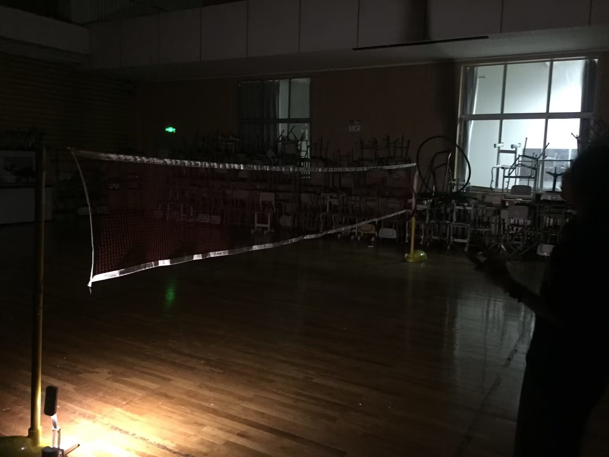

Diary-20230903
本文最后更新于：2023年9月3日 晚上
为何开始写日记呢？
当我发现受挫时，身边竟无一人可以共情，可以倾诉时，这流出来的无奈，便汇成了日记吧。
突然就理解张佳音为何日日写日记了。真的没有人可以诉说。之前或许有机会，但现在，最好还是不要打扰吧……
罢了罢了，还是开始记录一下今天的悲伤故事吧。
在自己考出英语211的ast成绩后，她已经不再信任我，而是机构教师，决定不会给我考雅思提供任何经济支持。
不解，伤心，愤怒，加上上周末因疲倦而发挥失常的周测（数44，物60）。
还是忍不住哭出来了。
她的语气是那么伤人，用词让我仿佛回到了那个晚上，面对未完成的作业，损坏的平板电脑，我在灯前(写至此处,长啸不自禁,属实是压抑得太深了)，背对着她，等待着不知何时会来的下一次打击。
真傻，我为什么会认为他们真的爱我呢？是挨得棒子还不够多，嘲讽还不够冰冷？恐怕恰恰相反，正是缺爱，才会给点阳光就灿烂；正是敏感，才会从投资行为中解释出“爱”这种十分高级，本可能不存在的情感。
这样啊，真想给张佳音磕几个.自己的一厢情愿,自己的痴心妄想,竟黏住不放甚至吓到了人家,实属罪过.
接着说,那便是那个再显然不过我却故意忽视的真理: “没经济独立前,不要想着有什么自由.” .
这无关对错,做得到,很是幸运.就像我的同桌李启扬(在厕所想到了这么一个幸福家庭的例子,又落泪了XD),银行工作,亲自来送零食.真让人羡慕啊.还有称呼”酷”这种美好的关系,真好.若是做不到,倒也正常,毕竟不会关系别人,照顾别人的人,不论是家庭还是社会原因造就的,还是挺多的.
因此,”逃离这个地方”,aka, “run”,这个我从那天夜里刷完牙上床时所生发出的情感,重新回来了.
这一次,以高中生的身体,它将有更多的可能性成为现实.
一转眼写了这么多,看来我不是没情感,只是压抑惯了吧.
再次感谢张佳音,嘿嘿,怎么感谢都不嫌多,感谢你让我变成一个正常(行吧其实还不算正常,至少心理年龄挺小挺幼稚的)人,带来了日记这样的习惯,这就是榜样的力量吧XD.
写下来,心情真的感觉平复了许多,看来这种整理自身的方法真是十分有效.
另附张佳音黑暗中的侧脸(虽然啥都看不见吧)

本博客所有文章除特别声明外，均采用 CC BY-SA 4.0 协议 ，转载请注明出处！